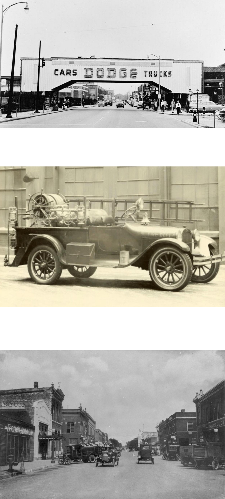

ИСТОРИЯ DODGE
1900—1942
Dodge Brothers Model 30-35 (1915) Компания Dodge была основана в 1900 году братьями Джоном и Горасом Додж. Её основной деятельностью стал выпуск комплектующих для развивающейся автомобильной промышленности. Добившись успеха в этой сфере, братья Додж решили, что пора начать производство собственного автомобиля.
Первая машина Dodge Brothers, которую позже шутливо прозвали Старушка Бетси, покинула завод 14 ноября 1914 года — а вслед за ней до конца года Доджи произвели еще 249 точно таких же автомобилей. К 1920 году компания занимала второе место по выпуску автомобилей после компании Ford, но в том же 1920 оба брата скончались, и новым главой компании стал Фред Дж. Хейнс. Состояние братьев Додж было солидным — по 20 с лишним миллионов долларов у каждого. Кроме того, наследники братьев (а кроме вдов у них никого не осталось), получили по 50 % уставного капитала. Но обе вдовы предпринимательскими талантами не владели, и дела компании пошли на спад. Владельцами предприятия стали их вдовы, которые в 1925 году продали её инвестиционной группе Dillon, Read & Co за 146 миллионов долларов. Несмотря на усилия новых владельцев, Dodge терял позиции на рынке, и инвесторы начали поиск покупателя для компании. Этим человеком стал Уолтер Крайслер, и в 1928 году компания вошла в состав корпорации Chrysler.
1942—1945
Dodge WC-52 Во время Второй мировой войны компания Dodge занималась преимущественно выпуском тяжёлых джипов (серии WC и WF), а также производством авиационных двигателей. Dodge WC поставлялся в СССР по ленд-лизу и на жаргоне шоферов назывался «Додж три четверти» из-за своей грузоподъёмности 750 кг (по аналогии с «полуторкой» ГАЗ-ММ).
1945—1980
Dodge Coronet Lancer (1958) В конце 1945 года возобновился выпуск гражданских автомобилей. Как и другие американские автопроизводители, Dodge предложил покупателям довоенные модели.
Самыми известными моделями марки Dodge 1960-70-х годов были спортивные купе Challenger и Charger. В попытке закрепиться в сегменте компактных машин компания стала продавать японскую малолитражку Mitsubishi Colt под своей маркой Dodge Colt. Продолжился выпуск Dodge WC под названием Dodge Power Wagon. В дальнейшем этот автомобиль послужил основой семейству пикапов, в том числе и Dodge Ram.
1980—1992
Dodge Aries (1981) В конце 1970-х годов Chrysler оказался в глубоком кризисе. Однако, получив государственную помощь, Chrysler сумел избежать банкротства. В рамках программы выхода из кризиса было создано несколько новых «антикризисных» моделей, например седан Dodge Aries и минивэн Dodge Caravan, который стал основоположником нового класса автомобилей.
Dodge Viper GTS 1992—1998 В 1992 году был представлен мощный спортивный автомобиль Viper, ставший первой моделью концепции «Новый Додж» («The New Dodge»). Еще одним совершенно новым автомобилем был седан Dodge Intrepid. Самой популярной моделью марки в 1990-х годах был компактный седан Dodge Neon, дебютировавший в 1995 году.
1998—2008
После создания в 1998 году объединения DaimlerChrysler, автомобили Dodge стали позиционироваться как более доступные, по сравнению с машинами других марок концерна, а также как мощные и спортивные. Был полностью обновлен модельный ряд компании. На смену популярному «Неону» пришёл кроссовер Dodge Caliber, созданный в сотрудничестве с компанией Mitsubishi Motors. Однако, в 2007 году концерн был расторгнут и активы компании временно перешли к Chrysler LLC.
с 2008
Финансовый кризис конца 2000-х годов коснулся Chrysler сильнее всего. К началу 2009 года компания находилась на грани банкротства и собиралась закрыть все свои производственные и торговые заведения. Тем не менее, вскоре нашёлся покупатель в лице итальянской компании FIAT, и с 2010 года деятельность возобновилась под новым патронажем. Одновременно, FIAT принялся внедрять на североамериканский рынок автомобили собственной марки, а на европейский — Dodge и Jeep в ином ребрендинге. В середине 2010-х произошли сокращения многих моделей, больше всего они затронули Dodge и Chrysler. Jeep, Ram и сам Fiat же, наоборот, продолжили быть конкурентоспособными на домашнем рынке компании.